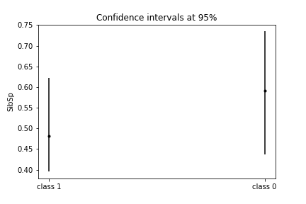
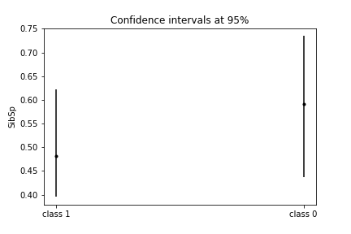
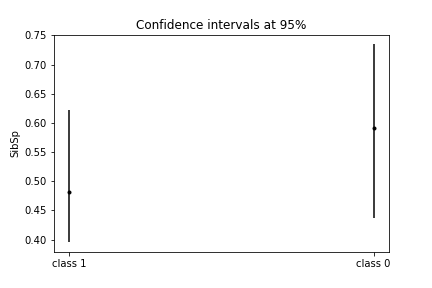

| PassengerId | relative_frecuency |
|---|---|
| 1 | 0.001497 |
| 597 | 0.002994 |
| 599 | 0.004491 |
| 601 | 0.005988 |
| 602 | 0.007485 |
| Name | relative_frecuency |
|---|---|
| Backstrom, Mrs. Karl Alfred (Maria Mathilda Gustafsson) | 0.001497 |
| Harris, Mr. Henry Birkhardt | 0.002994 |
| Bourke, Mr. John | 0.004491 |
| Oreskovic, Miss. Marija | 0.005988 |
| Moran, Mr. Daniel J | 0.007485 |
| Ticket | relative_frecuency |
|---|---|
| CA. 2343 | 0.010479 |
| CA 2144 | 0.019461 |
| 1601 | 0.028443 |
| 3101295 | 0.035928 |
| 19950 | 0.041916 |
| Cabin | relative_frecuency |
|---|---|
| C23 C25 C27 | 0.026846 |
| G6 | 0.046980 |
| C22 C26 | 0.067114 |
| E101 | 0.087248 |
| F2 | 0.107383 |
